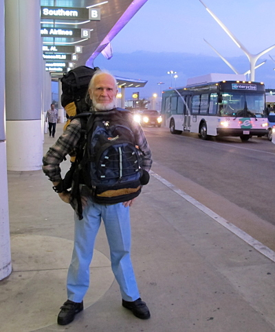
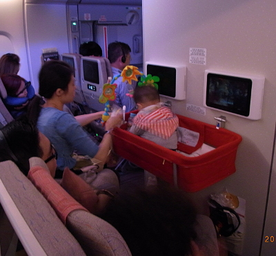
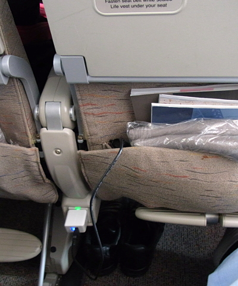
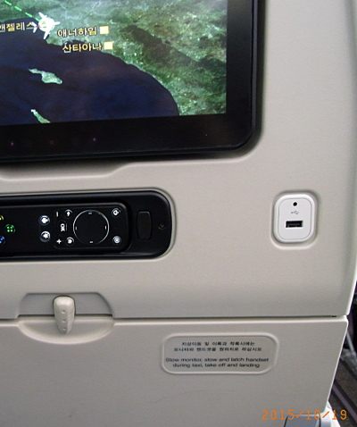

Thailand Trav-E-Log ©
Bangkok Arrival
Oct 21 2015, Bangkok, Thailand
-------------------------------------------
Arrived in Thailand after a pleasant flight from LAX, with connection in Seoul. This was my first flight on a double decker Airbus A380. Was surprised to find blankets and pillows at every seat in economy, with enough room for an average person to exit from any seat without forcing aisle seat passenger to un-buckle, get up, and out of the way. Two power outlets for every three seats on either side; three outlets for the four center seats. Plus, every seat back has a USB port for charging your devices. Put Asiana Airline on your list of excellent economy airlines.
At Incheon, passengers making connections had to pass through security again, so even though arriving and departing gates were next to each other, it took an hour to board the flight. Had to go up the stairs, down the hall, wait in line to do the security thing, down another hall, down stairs, and finally to the gate that had been "next door". They sealed the aircraft as I boarded -- they were waiting for me.
Entry into Thailand was smooth -- money changers still open at 10:30PM. Nothing to declare at Customs? - Have a nice day!
-------------------------------------------


Photos clockwise: At LAX, Power adapter between each seat, USB ports on seat backs, and Personal play pen for infants and small children. |

 |